Project Description
Overall Procedure
Basicly, the workflow of generating panoramic photos is as follows:
Details of each step
1. Warping to spherical coordinate system
The focal length of the camera is 380 pixel. This is estimated by the formula: focal length in pixels = (image width in pixels) * (focal length in mm) / (CCD width in mm). According to the image we took, the width in pixels is 720. The focal length in mm is 18. The CCD width in mm is 22.71. Thus, the focal length is around 720/22.71 * 18 = 571.
2. Image align
I use SIFT + RANSAC to imolement image alignment. The parameter I used are default 200 times for RANSAC and threshold 0.8 for SIFT method.
3. Blend Images
1. Alpha Blending
I assign a weight function to the source image, which weight w(x) varies linearly from 1 to 0 at the edge.
I notice that when applying alpha blending, choosing appropriate window size (blendWidth) is very important. ’Good’ window can generate smooth but not ghosted panorama. If we want to avoid discontinuities, we can set the window size equivalent to the largest prominent feature. To avoid ghosting, we can set the window less than 2*size of smallest prominent feature. While this method is easy to implement, it can also cause blurring of high frequency detail if there are small registration errors. Details will be discussed as folllows.
Good Results
1. Campus
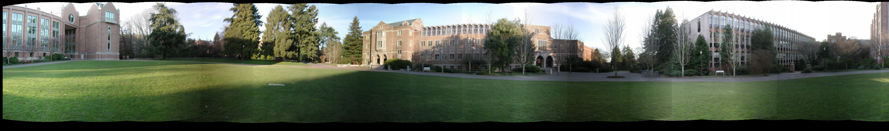
High resolution
{kind=link}
2. Crazed Interloper
This is a pano which the same person frequently runs into the camera.
{kind=link}
3. Inside a building
We can see noticable seams in this panorama because of the large intensity variance.
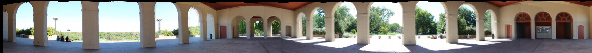
High resolution
{kind=link}
Bad Results
4. WashU [Bad Alignment]
This panorama is actually a failure because the x translation in pairlist is only half of the actual x translation, which is only around 125. My idea is that there are several images whose texture is simple and similar to each other. Thus the alignmenet didn't work well among this set of images.
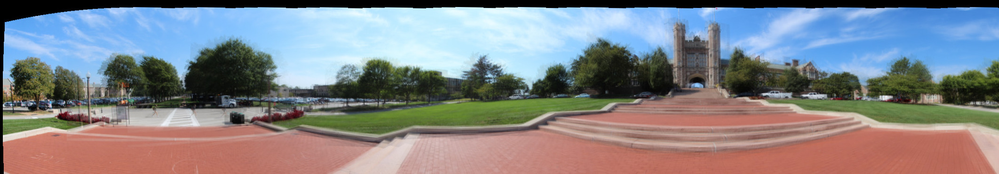
High resolution
{kind=link}
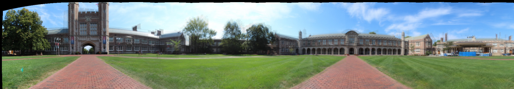
High resolution
{kind=link}
5. Hillside in Forrest Park [Bad Focal Length]
This pano is a failure because I used a wrong focal length parameter when warping images. Thus the result has many ghosting artifacts.
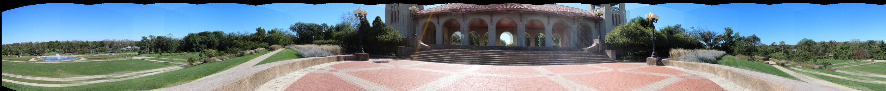
High resolution
{kind=link}
Conclusions
Let's take a look at the result and analysis what worked and what didn't.
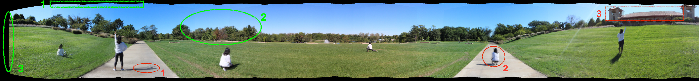
High resolution
{kind=link}
The Good: (green part)
The Bad: (red part)
| blendWidth = 50 |
| 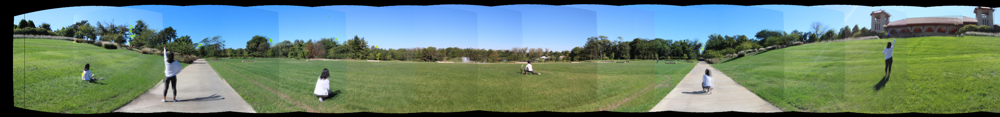 High resolution |
| blendWidth = 100 |
| 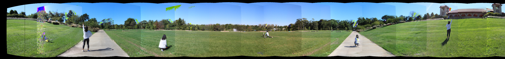 High resolution |
| blendWidth = 200 |
| 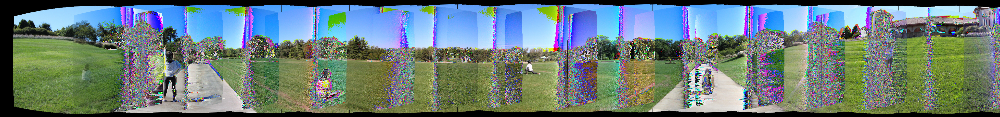 High resolution |
| blendWidth = 300 |
| 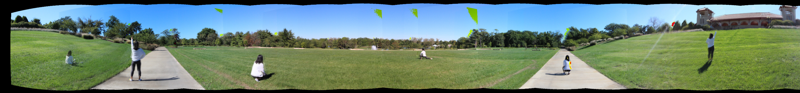 High resolution |
| blendWidth = 400 |
| 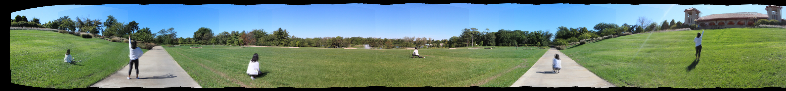 High resolution |
{kind=link}
{kind=link}
{kind=link}
{kind=link}
{kind=link}
Bell & Whistles(Extra Points)
1. Support radial distortion correction inside WarpSpherical.cpp.
| Without radial distortion correction |
| 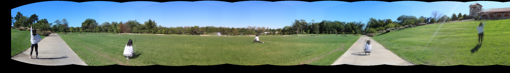 |
| With radial distortion correction |
Apparently, image with radial distortion correction has less artifacts near the boundaries. Thus we can get a sharper and clearer panorama using this method.
2. Try a sequence in which the same person appears multiple times